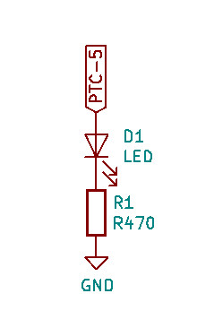
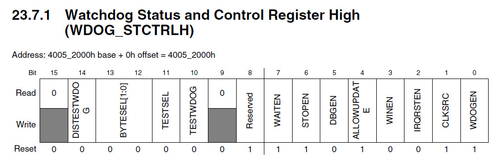
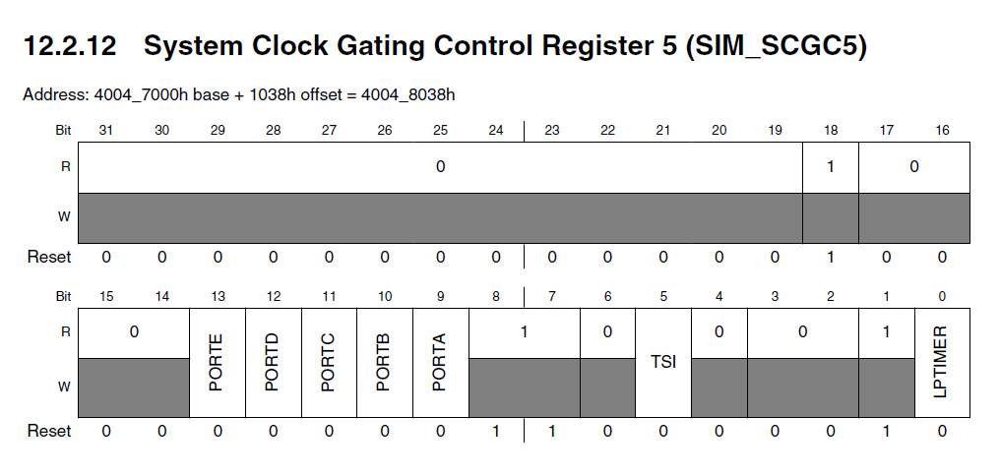
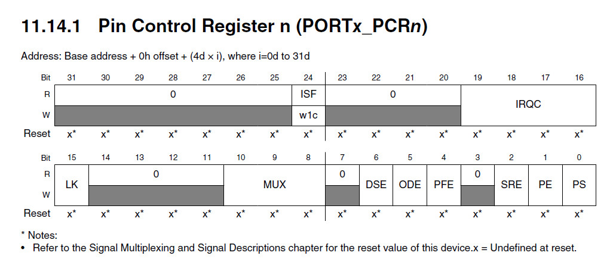
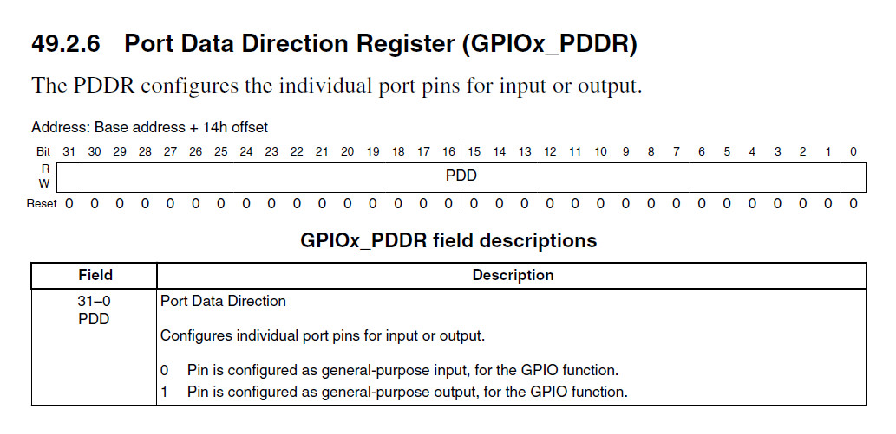
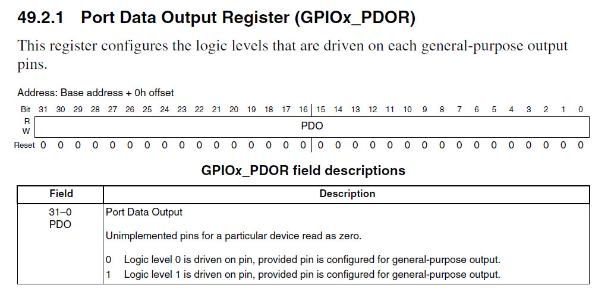
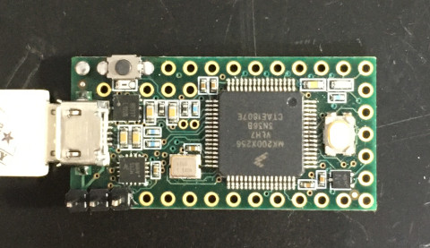
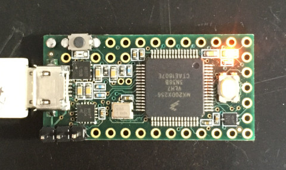

Steward
分享是一種喜悅、更是一種幸福
微處理器 - NXP MK20DX256 (Teensy 3.2) - Assembly - LED
參考資訊：
https://www.nxp.com/docs/en/data-sheet/K20P64M72SF1.pdf
https://www.nxp.com/docs/en/reference-manual/K20P64M72SF1RM.pdf
https://forum.pjrc.com/threads/25762-Turn-the-LED-on-with-assembler-code-(-Teensy-3-1-)?p=47739&viewfull=1#post47739
LED連接到PTC-5

Disable Watchdog

Port Clock

Enable Port

Port Direction

Port Output

main.s
.equiv GPIOC_BASE, 0x400ff080
.equiv GPIO_PDDR, 0x14
.equiv GPIO_PDOR, 0x00
.equiv SIM_BASE, 0x40047000
.equiv SIM_SCGC5, 0x1038
.equiv WDOG_BASE, 0x40052000
.equiv WDOG_STCTRLH, 0x00
.equiv WDOG_UNLOCK, 0x0e
.equiv PORTC_BASE, 0x4004b000
.equiv PORTC_PCR5, 0x14
.thumb
.cpu cortex-m4
.syntax unified
.global _start
.text
.org 0x0000
_start:
.word 0x20008000
.word reset
.org 0x0100
.thumb_func
reset:
ldr r0, =WDOG_BASE
ldr r1, =0xc520
strh r1, [r0, #WDOG_UNLOCK]
ldr r1, =0xd928
strh r1, [r0, #WDOG_UNLOCK]
ldr r1, =0x0000
strh r1, [r0, #WDOG_STCTRLH]
ldr r0, =SIM_BASE + SIM_SCGC5
ldr r1, =(1 << 11)
str r1, [r0]
ldr r0, =PORTC_BASE
ldr r1, =(1 << 8)
str r1, [r0, #PORTC_PCR5]
ldr r0, =GPIOC_BASE
ldr r1, =(1 << 5)
str r1, [r0, #GPIO_PDDR]
0:
eor r1, #(1 << 5)
str r1, [r0, #GPIO_PDOR]
ldr r2, =1000000
1:
subs r2, #1
bne 1b
b 0b
.end
main.ld
MEMORY {
FLASH (rx) : ORIGIN = 0x00000000, LENGTH = 512K
SRAM (W!RX) : ORIGIN = 0x20000000, LENGTH = 64K
}
SECTIONS {
.text : { *(.text*) } > FLASH
.rodata : { *(.rodata*) } > FLASH
.bss : { *(.bss*) } > FLASH
}
Makefile
all: arm-none-eabi-as -mcpu=cortex-m4 main.s -o main.o arm-none-eabi-ld -T main.ld -o main.elf main.o arm-none-eabi-objcopy -O ihex main.elf main.hex flash: sudo teensy_loader_cli --mcu=mk20dx256 -w main.hex clean: rm -rf main.o main.elf main.hex
編譯、燒錄
1. 連接開發板至PC
2. 按一下燒錄按鍵
3. 執行如下命令
$ make
arm-none-eabi-as -mcpu=cortex-m4 main.s -o main.o
arm-none-eabi-ld -T main.ld -o main.elf main.o
arm-none-eabi-objcopy -O ihex main.elf main.hex
$ make flash
sudo teensy_loader_cli --mcu=mk20dx256 -w main.hex
完成

